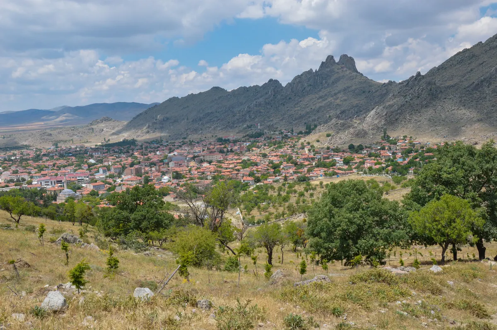

Kamu ve yerel yönetim
Valilik birimleri, kaymakamlıklar, belediyeler, il müdürlükleri, SGK, İŞKUR ve AFAD.
Şehrin ihtiyacını, kurumların bilgisini ve insanların fikrini aynı üretim sürecinde buluşturuyoruz.
Her aşamada yapılacak iş, üretilecek belge ve bir sonraki geçiş koşulu görünür olur.
Başvuru, uygulama ve devam sorumluluğu; aynı dosyanın birbirini tamamlayan parçalarıdır.
VİZYON ESKİŞEHİR 2036
PROJE FABRİKASI
Eskişehir için düzenli yeni projeler üreten; kurumların çalışmalarını ve vatandaşların fikirlerini ortak bir vizyonda geliştiren çalışma modeli.
01 / ÇALIŞMA MODELİ
İl Sosyal Etüt ve Proje Müdürlüğünün mevcut personeli; ihtiyacı araştırır, çözümü tasarlar, projeyi yazar ve uygun finansmana hazırlar. Temel öncelik, sürekli yeni ve faydalı projeler üretmektir.
Araştırma · Tasarım · Yazım
Bütçe · Değerlendirme · Takip
İhtiyacı doğrulanmış, uygulayıcısı belirlenmiş, bütçesi ve kaynak seçenekleri çalışılmış projeler.
Kurum, ilçe, hedef, hazırlık seviyesi ve gerçekleşme durumunu gösteren ortak envanter.
Başvurudan ve uygulamadan öğrenilen bilgiyi yeni üretime taşıyan kayıt.
02 / COĞRAFİ KAPSAM
Her ilçenin sorunları, fırsatları ve kapasitesi üretim gündeminde yer bulur. Bir projenin değeri, kendi ölçeğinde sağladığı faydayla değerlendirilir.
Her ilçe için güncellenen ihtiyaç ve fırsat kartı.
İlçe listesi kapsamı gösterir; gerçekleşmiş proje sayısı değildir.14 ilçeye erişim ve uygulamanın her ilçede nasıl işleyeceği planlanır. Ortak çözüm, yerel koşullara göre uyarlanır.
İlçelerin ortak sorunları veya birlikte değerlendirilebilecek kaynakları için proje geliştirilir. Kurumların katkısı ve uygulama sorumluluğu açıkça paylaşılır.
Belirli bir ilçenin ihtiyacına veya fırsatına odaklanılır. Tek ilçede etkili bir proje, kendi hedef grubunda yarattığı sonuç üzerinden değerlendirilir.
Karşılanmamış ihtiyaç, dezavantaj, erişim ve uygulama kapasitesi birlikte izlenir. İhtiyaç kartları; kaynak, tarih, etkilenen kesim, mevcut çalışmalar ve eksik bilgileri içerir.

03 / KATILIM AĞI
Kurum verileri, saha görüşmeleri, vatandaş geri bildirimleri ve Vizyon çalışma gruplarının raporları birlikte değerlendirilir.
Bu alanlar üretim kapsamını gösterir; yeni resmî stratejik eksenler değildir. Her proje mevcut Vizyon hedefi ve belge referansıyla eşleştirilir.
Valilik birimleri, kaymakamlıklar, belediyeler, il müdürlükleri, SGK, İŞKUR ve AFAD.
Üniversiteler, odalar ve borsalar, OSB'ler, organize tarım bölgeleri ve ilgili özel sektör kuruluşları.
Birlikler, kooperatifler, dernekler, vakıflar ve “Bir Fikrim Var” üzerinden katkı veren başvuru sahipleri.
Kaymakamlıklar · Tarım ve Hayvancılık · Sanayi ve Teknoloji · Millî Eğitim ve Gençlik · Kültür ve Turizm · Üniversiteler · Sosyal Sorumluluk.
Gruplar ihtiyaç ve içerik girdisi sağlar. Kurumlar irtibat kişileriyle katılır; ilçe irtibatı kaymakamlıklarla birlikte yürütülür. AB ve Dış İlişkiler Bürosu, İl Planlama ve Koordinasyon Müdürlüğü, YİKOB ve ilgili diğer birimlerle görev bağlantıları başlangıçta netleştirilir.
04 / PROJE GELİŞTİRME DÖNGÜSÜ
Her aşamada sorumlu, teslim tarihi ve geçiş koşulu kayda alınır. Hazır kurum dosyaları, kendi seviyelerinden sürece katılır.
İHTİYACI DOĞRULA
Sorunun kimi, nerede ve nasıl etkilediği belirlenir. Mevcut hizmetler ve benzer çalışmalar kontrol edilir; kaynak, tarih ve bilgi eksikleri kaydedilir.
ÇÖZÜMÜ TASARLA
Çözüm seçenekleri karşılaştırılır. Hedef kitle, beklenen sonuç ve il geneli, ilçeler arası veya ilçeye özgü proje ölçeği belirlenir.
UYGULAYICIYLA OLGUNLAŞTIR
İlgili kurum ve uzmanlarla iş paketleri, ortaklıklar, yer, ekipman, personel, katılımcıya erişim ve teknik koşullar netleştirilir.
BÜTÇEYİ VE FİNANSMANI KUR
Giderler miktar ve birim fiyatla hesaplanır. Uygun başvuru sahibi, ortak katkıları, eş finansman, ödeme takvimi ve alternatif kaynak yolu birlikte çalışılır.
TEKNİK VE STRATEJİK DEĞERLENDİRME
Yazım ekibi dışındaki değerlendiren kişi ve alan uzmanı görüş verir. Vizyon katkısı, uygulanabilirlik ve finansman incelenir; revizyonun sorumlusu ve tarihi kaydedilir.
BAŞVURUYU VE UYGULAMAYI TAKİP ET
Uygun çağrı ve kurum kararıyla başvuru yapılır, resmî alındı kaydedilir. Finansman, izinler ve başlangıç önkoşulları tamamlanınca yürütücü kurum faaliyeti başlatır.
SONUCU ÖLÇ, YENİ ÜRETİME AKTAR
Çıktılar, hedef gruptaki değişim ve devam koşulları ölçülür. Yaygınlaştırılabilecek çözümler ve geliştirilmesi gereken çalışmalar yeni ihtiyaç gündemine aktarılır.
Sonuçtan öğrenilen bilgi, yeni ihtiyaç kaydına ve bir sonraki proje üretimine döner.
İzleme düzenini incele ↗05 / PERSONEL VE İŞ DÜZENİ
Personelin yetkinliği ve mevcut iş yükü dikkate alınır. Her projeye bir sorumlu personel, yazımı kontrol edecek ikinci kişi ve uygulayıcı kurumun teknik irtibatı atanır.
PİLOT ZAMAN DAĞILIMI
Oranlar yalnızca Proje Fabrikasına ayrılan net süre içindir. İlk 30 günlük iş yükü ölçümüyle ayarlanır; tüm müdürlük mesaisi için kota değildir.
Üretim gündemini ve iş dağılımını belirler; ilerlemeyi, iş yükünü ve teslim kalitesini takip eder.
İhtiyaçtan tam dosyaya hazırlık yürütülür. Görüşmeler, bilgi eksikleri, bütçe ve teslim tarihleri kaydedilir; yazım ikinci kişi tarafından kontrol edilir.
Teknik çözümü, maliyeti, izinleri ve kapasiteyi doğrular. Faaliyetin uygulama sorumluluğunu açıkça belirler.
Alt çalışma grupları girdi sağlar. Müdürlük teknik görüş hazırlar; stratejik önceliklendirme mevcut Üst Çalışma Kurulunun değerlendirmesine sunulur.
Haftanın somut teslimleri ve çözülmesi gereken konular.
Yeni üretim gündemi, görevler ve süre güncellemesi.
Eksik ihtiyaçlar, gerçekleşen etki ve kapasite değerlendirmesi.
Başvuru ve harcama kararları ilgili kurumların yetkili organlarınca alınır. Bildirim ve iş birliği düzeni, hukuki statülere uygun görevlendirmeler ve protokollerle tanımlanır.
06 / BİR FİKRİM VAR
Kurum web sitesindeki mevcut “Bir Fikrim Var” kanalından gelen öneriler ekibin değerlendirme sorumluluğundadır. Başvuru sahibinin ihtiyacını ve çözüm önerisini açıklaması yeterlidir.
Teknik proje yazma deneyiminin bulunmaması, tek başına olumsuz değerlendirme nedeni değildir.
Başvuru numarası, tarih, konu, ilçe, özgün açıklama ve varsa ekler korunur. Alındı bilgisi iletilir.
İhtiyaç, fayda, Vizyon ilişkisi ve mevcut çalışmalar incelenir. Gerekiyorsa kısa ek bilgi istenir.
Uygun öneri kurum ve uzmanlarla olgunlaştırılır; hedef, iş planı, bütçe ve finansman hazırlanır.
Sonuç, nedeni ve sonraki adım bildirilir. Projeye dönüşen fikrin başvuru numarası proje koduna bağlanır.
İnceleme uzarsa gerekçe ve yeni tarih bildirilir. Durum değişikliklerinde başvuru sahibine bilgi verilir.
Ek bilgi bekleniyor · Geliştirmeye alındı · İlgili kanala yönlendirildi · Mevcut çalışmayla ilişkilendirildi · Bu aşamada geliştirmeye alınmadı.
Her sonuç gerekçelendirilir. Benzer öneriler ilişkilendirilirken her başvurunun kaydı ve fikir sahibinin katkısı korunur. Standart hizmet talebi veya şikâyet uygun başvuru kanalına yönlendirilir. Geliştirmeye alma kararı, finansman veya uygulama taahhüdü oluşturmaz.
Kayıt ve geri bildirim, kurum web sitesinin mevcut imkânlarıyla eşleştirilir; gerekli teknik düzenlemeler başlangıç iş planına alınır. Kişisel iletişim bilgileri kamuya açık portföyde paylaşılmaz.
Bu sunum, mevcut kanaldan gelen önerilerin nasıl değerlendirileceğini anlatır; burada yeni bir başvuru formu açılmaz. İlgili çalışma aracı: EK-07.
07 / PROJE DOSYASI
Temel ürün, ilgili kurumun karar ve hazırlık süreçlerinde kullanabileceği bütünlüklü proje dosyasıdır. İçeriğin derinliği proje büyüklüğüne göre değişir; ortak standart korunur.
Kod, sürüm, sorumlu, kurumlar, ilçeler, hedef grup, süre, bütçe ve çözümün kısa özeti.
Kanıtlar, veri kaynakları, başlangıç değeri, hedeflenen değişim ve Vizyon belge referansı.
İşin kapsamı, sırası, süresi, sorumlusu, teslimi, kabul ölçütü ve diğer işlerle bağı.
Yer, ekipman, personel, katılımcıya erişim, hizmet sunumu, satın alma ve koordinasyon.
İzin, tahsis, mülkiyet veya kullanım hakkı, kurum kararları ve gereken uzmanlık belgeleri.
Miktar, birim fiyat, fiyat tarihi, vergi, eş finansman, nakit akışı ve alternatif kaynak.
Önlemler, sonuç göstergeleri, veri sorumlusu ve sıklığı; proje sonrası işletme ve gider kaynağı.
Resmî formlar, ortaklık belgeleri, taahhütler, teknik ekler, son sürüm ve revizyon kayıtları.
HAZIRLIK SEVİYELERİ
Doğrulanmamış bilgi “teyit bekleniyor” olarak; sorumlusu ve hedef tarihiyle işaretlenir.
Araştırılacak ihtiyaç ve çözüm önerisi. EK-01; web kaynağı için EK-07.
Uygulayıcı, ana tasarım ve yaklaşık maliyet çalışılmıştır. EK-08 incelemesine alınabilir.
EK-02–05 tamamlanmış; EK-08 görüşü ve gerekli revizyonlar kayda alınmıştır.
Seçilen çağrının resmî formları ve zorunlu ekleri tamam; EK-09 kontrolü kapanmıştır.
Finansman, yetkili kararlar ve başlangıç önkoşulları tamam; EK-11 açılmıştır.
08 / FİNANSMAN MODELİ
Finansman hazırlığı tasarımın başında başlar. Her proje için uygun başvuru sahibi, ortaklık, ödeme takvimi, eş finansman ve proje sonrası giderler birlikte değerlendirilir.
BEBKA, ilgili bakanlık programları, TÜBİTAK, TKDK/IPARD; uygun işletmeler için KOSGEB, uygun dernekler için PRODES.
Erasmus+, Avrupa Dayanışma Programı, Ufuk Avrupa, Dijital Avrupa ve uygun IPA çağrıları.
Birleşmiş Milletler kuruluşları, büyükelçilikler, uluslararası vakıflar ve kalkınma iş birliği programları.
Kurum bütçesi, ortak katkıları, uygun sponsorluk ve bağışlar, ayni katkılar, gelir getirici faaliyet ve aşamalı uygulama.
Bu başlıklar fon araştırma kapsamıdır. Açık çağrı, uygunluk ve destek koşulları her dosyanın hazırlık tarihinde resmî rehberden doğrulanır; hibe veya kaynak taahhüdü varsayılmaz.
EK-04 / MALİ HAZIRLIK
Fon veya kurum kaynağı, başvuru takvimi, sorumlu ve gerekli belgeler belirlenir.
Başka kaynak, küçük pilot, aşamalı yatırım veya ortak kurum bütçesiyle başlayabilecek kapsam çalışılır. Amaç ve sonuçlar yeniden değerlendirilir.
Ayni katkı ayrı gösterilir; eş finansman sayılması çağrı şartına bağlıdır. Aynı gider iki kaynaktan finanse edilmez. Kredi geri ödemesi hibe gibi değerlendirilmez.
Araştırılıyor → Uygunluk doğrulandı → Başvuru yapıldı → Destek kararı alındı → Sözleşme ve ödeme takvimi netleşti.
Her durumun belgesi ve tarihi tutulur. Tutarların para birimi, vergi varsayımı, fiyat tarihi ve maliyet dayanağı yazılır. Destek kararı, sözleşme tutarı, tahsil edilen kaynak ve yapılan harcama ayrı raporlanır.
09 / VİZYON UYUMU VE KALİTE
Yeni projeler, kurum dosyaları ve geliştirmeye alınan web önerileri hazırlık seviyelerine uygun biçimde incelenir. Stratejik değerlendirme en az olgun konsept aşamasında yapılır.
Ağırlıklı puan = ölçüt puanı ÷ 5 × ağırlık. Yazılı kanıt gerekir; farklı görüşler gerekçeleriyle uzlaştırılır.
Önceliklendirmeye sunulur.
Belirli revizyonlarla yeniden değerlendirilir.
İhtiyaç veya tasarım yeniden çalışılır.
Puanlama ve eşikler V4 pilot önerisidir. Zorunlu bilgi eksikse önce dosya tamamlanır.
Dosyayı yazan personel kendi projesinin nihai teknik değerlendirmesini yapmaz. Alan uzmanı görüşü kaydedilir.
Sonuç, eksik, sorumlu ve hedef tarih kuruma iletilir. Yeni sürümde düzeltmelerin kapanışı kontrol edilir.
Yüksek puan finansman veya uygulama kararı değildir. Müdürlüğün teknik görüşü, kurumların karar ve başvuru yetkilerini değiştirmez.
Kurum projelerinde pilot hizmet hedefi: 3 iş gününde kayıt ve eksik kontrolü; tam dosyada 10 iş gününde ilk teknik görüş. Uzman incelemesi için gerekçeli takvim oluşturulur; çağrısı yakın dosyalar öncelikle ele alınır.
10 / BAŞVURUYA HAZIRLIK
Bir projenin hazır olması, seçilen çağrının güncel rehberini ve zorunlu eklerini de karşılamasını gerektirir.
Çağrı açık değilse veya resmî koşullar doğrulanmadıysa dosya “tam proje dosyası / çağrı bekleniyor” olarak tutulur. Dosyayı portala yüklemek tek başına nihai gönderim değildir; resmî alındı kaydı doğrulanır.
EK-02 ana metin + EK-03 iş planı + EK-04 bütçe ve finansman + EK-05 hazırlık ve risk + EK-08 değerlendirme + EK-09 kontrolü + çağrının resmî formları ve zorunlu belgeleri.
Kurumun mevcut formu aynı bilgileri içeriyorsa bölüm ve sayfa eşleştirmesi yeterlidir. Kurum dosyası EK-06 ile kaydedilir; baştan yazılması zorunlu değildir. Fon başvurusunda güncel rehber, resmî şablon, dil ve gönderim yöntemi esas alınır.
11 / İZLEME VE ÖĞRENME
Başvuru sayısı kadar uygulamaya dönüşüm, gerçekleşen katkı ve hedef gruptaki değişim izlenir. Sonuç bilgisi yeni projelerin tasarımını besler.
Kurumlar kendi kayıtlarını günceller; portföy takibini Müdürlük yürütür.
İş paketi teslimleri, hedef göstergeler, gerçekleşen ve ödenen giderler, taahhütler, nakit ve kritik riskler izlenir. Sapmalar için görev ve tarih belirlenir.
EK-11 ↗Amaç, faaliyet, süre, bütçe, ortak, yer veya gösterge değişikliği uygulanmadan önce etkisi kaydedilir; gereken kurum veya fon onayı alınır.
EK-11 ↗Sonuç kanıtları, ilçe ve yararlanıcı kapsamı, işletme sahibi, yıllık gider kaynağı, açık yükümlülükler ve sonraki etki kontrolü kaydedilir.
EK-12 ↗İşe yarayan uygulama, aksayan nokta ve diğer ilçelere aktarım koşulları belirlenir. Yeni ihtiyaçlar EK-01 gündemine alınır.
EK-01 ↗Üretim ve aşama ilerlemesi · Değerlendirme süresi · Web fikrinden projeye dönüşüm · Başvuru ve destek durumu · İlçe ihtiyaç kapsamı · Uygulamaya geçen proje · Hedef gruptaki değişim.
Aynı proje farklı aşamalarda tekrar sayılmaz; çok ilçeli proje toplamda bir kez sayılır. Kamuya açık portföy kişisel iletişim bilgisi içermez.
12 / BAŞLANGIÇ YOL HARİTASI
Pilot, mevcut personelin gerçek kapasitesini görerek ilerler. Başlangıç tarihi görev dağılımıyla; teslim hedefleri ilk 15 günlük kapasite değerlendirmesiyle netleşir.
Yetkinlik ve süre analizi, kurum ve ilçe irtibatları, ortak kayıt standardı, web fikirlerinin ekibe aktarımı ve geri bildirim düzeni.
14 ilçenin ilk ihtiyaç kartları, kurumların mevcut ve planlanan projeleri, bilgi eksikleri ve ilk fikir notları.
Seçilen fikirlerin kurumlarla olgunlaştırılması, teknik koşullar, maliyet ve kaynak araştırması; gelen dosyaların ilk incelemesi.
Uygulama notu, bütçe ve eklerin tamamlanması; uygun çağrı ve karar bulunan projelerin başvuruya hazırlanması.
Pilot çalışma hedefleri: 12 fikirden 6 olgun konsept ve bunlardan 3 tam dosyaya ilerleme öngörülür. Bunlar 21 ayrı proje değildir. Hedefler, iş yükü, puanlama ve hizmet süreleri pilotta gözden geçirilir.
13 / KONSEPT VE UYGULAMA EKLERİ
14 ek; ihtiyaç kaydını, proje hazırlığını, finansmanı, değerlendirmeyi ve sonuç takibini ortak bir düzene bağlar. Her ekin amacı, kullanım aşaması ve üreteceği çıktı aşağıda açıklanmıştır.
İhtiyaç kartı, geliştirme kararı, proje dosyası.
Mevcut dosyayı kaydet, standarda göre eksikleri tamamla.
İlk inceleme sonrası ekip EK-01–05 ile geliştirir.
İhtiyacı tespit eden personel doldurur. Kaynak ve tarih, etkilenen kesim, mevcut hizmet, çözüm önerisi, ölçek ve Vizyon ilişkisi kaydedilir.
Çıktı: Araştırılacak eksikler ve ilk geliştirme görevi.
Proje sorumlusu kurum irtibatıyla hazırlar. Kimlik, ihtiyaç kanıtı, amaç, yararlanıcı, göstergeler, işleyiş, ortaklıklar, sürdürülebilirlik ve teknik teyit alanlarını kapsar.
Çıktı: Diğer eklerle ilişkilendirilmiş ana proje metni.
İş paketinin sorumlusu, takvimi, bağımlılığı, çıktısı ve kabul ölçütü yazılır. Her paket için sahadaki uygulama yöntemi, yer, ekipman, personel ve erişim ihtiyacı açıklanır.
Çıktı: Görev dağılımı ve tekrar kullanılabilir iş paketi notu.
Miktar ve birim maliyet, dayanak, vergi ve para birimi; uygun gider, eş finansman, ayni katkı, ana ve alternatif kaynak, nakit akışı ve yıllık işletme hesabını kapsar.
Çıktı: Gerekçeli bütçe, finansman yolu ve devam kaynağı.
Yetki, yer, tasarım, izin, personel, ortaklık ve satın alma hazırlıkları; gerekli oldukları aşama, kanıt, sorumlu ve tarih ile izlenir. Riskler olasılık ve etki 1–3 ölçeğiyle kaydedilir.
Çıktı: Önkoşul listesi, önlem ve eksik kapatma görevleri.
Kurum irtibatı; proje kimliği, mevcut hazırlık seviyesi, Vizyon ilişkisi, kapsam, mevcut belgeler ve talep edilen incelemeyi bildirir. Mevcut dosyanın bölüm ve sayfaları ortak standartla eşleştirilir.
Çıktı: Kurum projesinin envanter kaydı ve bilgi eksikleri.
Görevlendirilen personel mevcut web başvurusunu aktarır. Özgün kayıt, ilk inceleme, bilgi ihtiyacı, karar, gerekçe, geliştirme veya yönlendirme işi ve başvuru sahibine dönüş tutulur.
Çıktı: İzlenebilir ilk görüş ve gerekçeli geri bildirim.
Yazım ekibi dışındaki değerlendiren kişi, alan uzmanıyla çalışır. Altı ölçüte göre kanıtlı puan, güçlü yön, kritik eksik, teknik görüş, revizyon sorumlusu ve kapanış kaydedilir.
Çıktı: Teknik uyum görüşü ve izlenebilir revizyon.
Seçilen her çağrı için resmî kaynak ve koşullar doğrulanır. Tüm zorunlu belgeler, bütçe tutarlılığı, imza ve yetki, portal önizlemesi ve ikinci kişi kontrolü tamamlanır.
Çıktı: Başvuruya hazır / hazır değil sonucu ve eksik kapatma görevi.
Gönderimi yapan ve takip sorumlusu; nihai paket, zaman, yetkili kişi, başvuru numarası ve resmî alındıyı kaydeder. Fon yazışmaları, düzeltmeler, karar ve sözleşme ayrı izlenir.
Çıktı: Doğrulanmış teslim, fon sonucu ve sonraki işlem.
Yürütücü kurum faaliyet ilerlemesini, göstergeleri, mali gerçekleşmeyi ve riskleri raporlar. Değişiklikte önceki ve önerilen durum, gerekçe, etkiler, gerekli onay ve yeni sürüm işlenir.
Çıktı: İlerleme, sapma, düzeltici görev ve değişiklik kaydı.
Gerçekleşen hedefler ve kanıtlar, mali kapanış, yararlanıcı kapsamı, devralan kurum, devam bütçesi, açık yükümlülükler ve sonraki etki kontrolü belirlenir.
Çıktı: Sonuçlar, devam sorumluluğu ve yeni üretime aktarılacak dersler.
Her projenin kimliği, kaynağı, Vizyon ilişkisi, kapsamı, ilerlemesi ve mali durumu tutulur. Aylık üretim, kurum ve web girişleri, fon süreci ile ilçe kapsamı raporlanır.
Çıktı: Tekil proje kaydı ve aylık üretim / sonuç görünümü.
Haftalık veya aylık net süre, yeni üretim işleri, sorumlu ve ikinci kontrol, planlanan / gerçekleşen saat ve somut teslimler yazılır. Yönetim sonraki dönemin önceliğini belirler.
Çıktı: Düzenli proje üretimi ve açık teslim sorumluluğu.
Her ekte aynı proje kodu kullanılır; kaynak başvuru numarası korunur. Köşeli parantezler bilgiyle değiştirilir; satır ve yazı alanları ihtiyaca göre çoğaltılır. Geçerli olmayan alan gerekçesiyle “Uygulanmaz” olarak işaretlenir.
Doğrulanmamış bilgi için “Teyit bekleniyor”, sorumlu ve hedef tarih yazılır. Para birimi, vergi durumu ve fiyat tarihi belirtilir. Belge adı veya erişim bağlantısıyla dayanak gösterilir. Kişisel iletişim bilgileri yalnızca görevi gereği erişilen kayıtta tutulur.
14 / SORULAR VE YANITLAR
Üretim, değerlendirme, başvuru ve uygulama birbirini tamamlar; her birinin sorumluluğu ve karar koşulu ayrıdır.
Mevcut İl Sosyal Etüt ve Proje Müdürlüğü personelinin yürüttüğü sürekli çalışma modelidir. Ayrı bir idari birim veya yeni karar organı öngörülmez.
Esas öncelik sürekli yeni ve faydalı proje üretmektir. Kurum projeleri ve “Bir Fikrim Var” önerileri aynı çerçevede değerlendirilir ve geliştirilir. Pilot süre dağılımında yeni üretime %60 ayrılması önerilir.
İl geneli, ilçeler arası ve ilçeye özgü projeler geliştirilebilir. Tek ilçeye yönelik çalışma, kendi ihtiyacına ve hedef grubuna sağladığı faydayla değerlendirilir; 14 ilçenin dengesi portföy düzeyinde izlenir.
Mevcut dosya EK-06 ile kaydedilir ve ilgili hazırlık seviyesinden sürece girer. Ortak standardı karşılayan bölüm ve sayfalar eşleştirilir; yalnızca eksikler tamamlanır.
Puan, teknik ve stratejik değerlendirmeyi destekler. Hibe veya uygulama kararı yerine geçmez. Başvuru koşulları, fonun kararı, kurum yetkisi ve uygulama önkoşulları ayrıca tamamlanır.
İhtiyaç, tasarım, uygulama planı ve bütçe hazırlanabilir. Dosya, uygun fırsat geldiğinde güncel çağrı şartlarına uyarlanır. Çağrı ve zorunlu belgeler doğrulanmadan “başvuruya hazır” olarak işaretlenmez.
Başvuruya hazır dosya seçilen çağrının koşullarını karşılar. Uygulamaya hazır projede ise finansman, yetkili kararlar ve başlangıç için gereken teknik / idari önkoşullar tamamlanmıştır.
Bu site V4 konseptinin sunum demosudur. Başvuru toplamaz. “Bir Fikrim Var” için kurumun mevcut web kanalı; kurum projeleri için tanımlanan irtibat ve bildirim düzeni esas alınır.